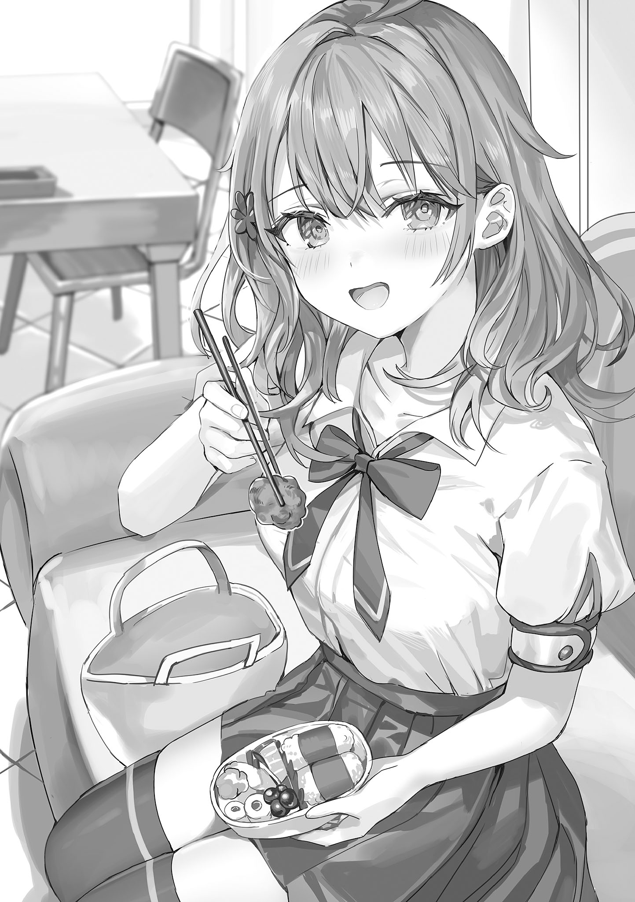

秋嶺祭が終わり、振替休日を挟んで通常授業に戻った征嶺学園。しかし、生徒達の多くは全く授業に集中できていない様子で、友人やクラスメートと話がしたそうにそわそわしていた。中には我慢できずに、こっそりスマホを使ってチャットをしている生徒まで散見される。
彼らの意識の大半を占めているのは、体育館で行われた全校朝礼で起こったひとつの事件。あるいは、謝罪会見だった。
『申し訳ありませんでした』
そう言ってステージ上で全校生徒に見事な土下座を披露したのは、学園でも三本の指に入るモテ男子である桐生院雄翔。大企業の御曹司であり、その卓越したピアノの腕前と甘いマスクから〝ピアノ王子〟などとも称され、それ相応にプライドも高いことで知られている生徒だ。そんな彼が見せたその行動は、全校生徒に衝撃を与え、多くの女生徒たちに悲鳴を上げさせた。いや、むしろ一番衝撃的だったのは……土下座をする雄翔の頭部が、眩く輝いていたことかもしれない。
いつも嫌みなほどに隙なくセットされ、女生徒たちに悩ましい溜息を吐かせていた魅惑のサラサラヘアーが、その頭部からきれいさっぱり消え去っていたのだ。しかも剃った人の腕が悪かったのか、あちこちに絆創膏が貼られていて、なかなか痛ましいというか滑稽というか……まあはっきり言ってかなり笑えた。顔だけは相変わらず耽美系だったから尚の事。正直、統也の口から行われた事情説明とか、ちょっと入ってこなかった。
それでも、少しずつ理解が浸透するにつれ、主にあの騒動で何らかの被害を受けた生徒を中心に、怒りの声が湧き上がり──かけたのだが。そこで雄翔と共にステージに上がっていた菫が突然「連帯責任」と称してハサミを取り出し、自慢の縦ロールを断髪しようとしたところで再び阿鼻叫喚。菫を止めようと女子剣道部員数名がステージ上に乱入し、先日の剣劇を彷彿とさせるバトルが始まり……茅咲の大喝で全員正座するという、コントとしか思えない騒ぎが起きた。
それでまあ、全校生徒が笑えばいいのか怒ればいいのか分からない奇妙な状態に陥る中、校長の口から雄翔に〝一カ月の停学〟という処分が下され、全校朝礼は終了。そして今は、全校生徒がその話で持ちきりだった。中でも、雄翔の陰謀を挫いた張本人と思われる政近には、当然のように注目が集まるわけで。
「なあKuze！ 今朝のあれって、やっぱり学園祭ん時のピアノ対決が原因なのか!?」
「ピアノ王子にピアノ勝負で勝ったってマジ!?」
「どうやってあの騒ぎの犯人が桐生院くんだって分かったの？」
一限目の授業が終わった途端、クラスメートがワッと寄ってきて、政近は盛大に顔を引き攣らせる。それでも、ここで説明を怠って変な噂や憶測が広まるのは御免なので、政近は出来る範囲で質問に答えていった。
「なんで桐生院が犯人って分かったかって言えば、あの騒動が現生徒会の失脚を狙ったものなら、犯人は次期会長選に出馬する可能性がある奴だろ？ まあ前期の会長と副会長に恨みを持つ人間って可能性もあったけど……どっちにしろあそこまで大きな騒ぎを起こした以上、来光会には事情説明のために接触を図ると思ったんだよ。それで、来光会に近付く奴がいないか見張ってたら……ってわけだ」
「へぇ～！ で、どうやって討論会に持ち込んだんだ？」
「それはまあ、秘密だ」
「えぇ～！ 教えてくれよぉ、めっちゃ気になるじゃん！」
「それ！ むしろそこを一番知りたいんだが!?」
クラスメートにグイグイと詰め寄られるが、政近にも話せないこと……というか、話したくないことがある。なので、政近は苦笑しながら殺し文句を口にした。
「勘弁してくれ。来光会絡みのことだと、言えないこともあるんだ」
その言葉を聞いて、身を乗り出していた周囲のクラスメートは一様に「うっ」という表情になる。
「ああ、そういうことか……」
「そう言われると、ね……」
彼らが揃ってなんとも言えない顔になるのには理由があった。というのも、秋嶺祭でのあの騒動に関しては、当日中に緘口令が敷かれたのだ。秋嶺祭を訪れていた、来光会の面々によって。
それでも人の口に戸は立てられず、外部客を中心とした数名が、騒動の動画や画像をＳＮＳで発信したのだが……それらの投稿は、一分と経たない内に削除された。それもアカウントごと。そして、メディアには「秋嶺祭に不審者が侵入し、警備員に拘束された」という、騒動の規模に反して短く簡素なニュースがちょろっと流れただけ。さも、侵入してすぐ捕まったかのようなあっさりとしたニュースは、特に人々の関心を惹くこともなくスルーされ……これには来光会がどういう組織か知っている征嶺学園生も、真顔で「え、怖っ」と言うしかなかった。
ちなみに、警察なども特に出動していなかったが……風紀委員会室に連行された侵入者たちは、全員いつの間にか姿を消していた。彼らがどこに行ったのか、どんな目に遭わされたのかは、恐らく知ろうとしない方がいいのだろう。
「一国家を裏で操ってる秘密組織があるってのは、古今東西どこにでもある陰謀論だけどよ……オレ、来光会がそれなんじゃないかと思えてきたわ」
「いや、別に秘密組織ではないんだけど……本当にありとあらゆる権力者が集まってるんだなって、実感したよね」
「むしろ、よく停学一カ月で済んだよな、桐生院」
「そこはまあ、選挙戦のためだったってことで……恩赦じゃない？」
畏れ混じりに話し合うクラスメート達。それらに無言の苦笑で応えつつ、チラリと教室後方に目を向ければ……そこにも別の人だかりが出来ていた。
「あのライブ、マジでよかった！ なぁ、音源とかないの？ 他のクラスの奴らも欲しがってんだけど」
「お、音源？ あぁ～それは考えてなかったな……」
「練習用に録ったのはあるけど……ちゃんとスタジオで録ったやつはない、かな」
「「「えぇ～！」」」
不満げな声に晒され、少し困りながらも誇らしげな顔をするTakeshiとHikaru。
「九条さん、遅くなってしまいましたが……あの爆竹騒ぎの時、声掛けしてくださってありがとうございました。わたしも少しパニックになりかけていたのですが、すごく頼もしかったです」
「そう？ それなら……よかったわ」
「九条さんのエルフコス、もう一回見たいなぁ……」
「あ、あれは……あの時限定、だから……」
「え～もったいない」
「バンド衣装もすっごいかっこよかったよね！ 遠目だったけど……あれってどこで買ったの？」
「あれはNonoaさんのプロデュースだったから、私はちょっと分からなくて……」
憧れと親しみが混じった視線の中で、少しぎこちない笑みを浮かべるAlisa。
その光景を眺めている内に二時限目の教師が入って来て、集まっていた生徒達は渋々席に戻っていく。それと同時に、Alisaも席に戻って来た。
「お疲れ」
Alisaに少し疲れのにじむ笑みを向けると、Alisaは少し動揺した様子で目を泳がせながら頷く。
「……あなたもね」
小さな声でそう言ったっきり、椅子に座って前を向くAlisaに、政近は少し苦笑した。
（あぁ……こりゃ、後夜祭のことを引きずってんな。ま、学園祭テンションでだいぶ……アレだったしな）
そう考えて、政近も当時の光景を思い出しかけて慌てて頭を振る。そうして、雑念を振り払って授業に臨もうと……するが、授業中も相変わらず周囲から意識が向けられていて、これまたなんとも落ち着かない気分にさせられる。
（うぅ～ん、学園祭を通じて俺ら二人の知名度が上がったのはいいけど……これは、思ったより気疲れするな……）
選挙戦のことだけを考えるなら、今の状況は願ったり叶ったりだ。元々、Alisaにバンドをやるよう勧めたのは、Alisaのイメージ改革と社交性強化が主な理由。実際、学園祭を経てAlisaに向けられる視線は変わった。以前は遠巻きに眺められるだけだった孤高の存在が、今では少しでもお近付きになりたいと願う人々に囲まれるようになったのだ。そしてAlisaもまた、少し戸惑いながらもそれに応じる姿勢を見せている。
（結果だけ見れば大成功……なんだけど、誤算は俺にも注目が集まっちゃったことなんだよなぁ）
むしろ、今は政近の方が話題をさらっている感すらある。決して悪い意味ではないので、これも選挙戦の上ではいいことなのだが……やはり、落ち着かない。
（ま、今朝の朝礼で一時的に話題性が上がってるだけだろ。さっきの俺の説明が広まれば、それも落ち着くはず……）
な～んて、軽く考えていたのが間違いだった。
「なあ、九条さんに投げつけられた爆竹を、飛び蹴りで蹴り落としたってマジ？」
「Kuze君ってピアノがとてもお上手だったのですね。どちらで習っていらしたの？」
「結局、学園祭に乱入してきた奴らってどうなったか知ってる？」
「それよりクイズ対決の時の話が聞きたいんだけど！」
休み時間の度に、押しかけてくる人、人、人。向けられる羨望に称賛。おかげで休み時間なのに全く気が休まることがなく、ようやく昼休みになった頃には、
「ぁぁぁ～～～～」
政近は他に誰もいない生徒会室にて、見事に死んでいた。
「う～～～～、んぅ～～～～っ」
ソファの上でうつ伏せになり、うごうごと身をよじらせながらくぐもった奇声を上げている政近。どこに出しても恥ずかしい、立派な危ない人である。
室内に自分一人しかいないのをいいことに思う存分身悶えていた政近は、不意にパタッと動きを止めると呟いた。
「……はしゃぎ過ぎた」
口から漏れたのは、後悔と羞恥に塗れた一言。
周囲からさもTakeshi勇伝かのように語られる、秋嶺祭における自分の行動。それら全てが、政近にとっては既に半分黒歴史と化していたのだ。気分としては「見ないで。噂しないで。お願いだから放っておいて」といった感じである。
（ステージ上で爆竹を飛び蹴りで迎撃。不良相手に顔面パンチ。おまけに……）
脳裏にまざまざと蘇る、雄翔とのやりとり。雄翔の芝居がかった態度に釣られるように、余裕たっぷりにくわっこいー強キャラムーブをかました自分自身──
「おブォッうっ！」
瞬間的に羞恥心が爆発し、政近はバウンと腰を跳ねさせる。そして、そのままグネグネうごうごと激しく悶絶。
（う、ぐ、おぉぉぉぉぉ…………死ぬ。マジで、死ぬぅぅぅぅ）
不幸中の幸いは、校庭と講堂それぞれのステージ上の出来事を除けば、それ以外のことに関しては目撃者が少ないことか。
雄翔に対してやった恥っずかし～強キャラムーブは、雄翔以外の人には知られていない。雄翔が他の誰かに話すとは思えないので、個人的に一番の黒歴史であるあのやりとりに関しては、もう誰にも知られることはないだろう。
不良を正拳突きでノックアウトした件はそれなりに目撃者がいたが、その後のNonoaのオトモダチ達が行った蹂躙劇の方がよっぽどインパクトが大きかったせいか、特に噂にはなっていないようだ。政近に関して主に噂されているのは、爆竹キックとピアノ対決の件だった。この二つに関しては、政近としても特に恥じることはなかったのだが……その話をされると、どうしたってその前後にあった自分のくわっこいい言動が連想されてしまう。
（いや、分かってるよ？ 誰も痛々しいとは思ってないし、そもそもそこまで知られてないってことは。分かってるけどさぁぁぁ～～～～イギギギギ）
政近は同時期に良いことと悪いことがあった場合、悪いことの方で印象を上塗りされてしまうタイプである。以前にも、まーちゃんとの思い出を悲しい別れだけを切り取って、悪い記憶として処理してしまったように。今回に関しても、それと全く同じ事態に見舞われていた。
（うぐぅ……そう考えると、白鳥相手にやったあれこれや、アーリャにやったサプライズまで痛々しく思えてきた）
一度そうなってしまうと、もう完全に負の連鎖である。脳裏に浮かぶ、奈央の泣き顔。そして、Alisaの小悪魔的な笑みと魅惑の谷──
「ふバゥッ!!」
大変けしからん記憶が蘇り、政近はまたしてもバウンと腰を跳ねさせた。それでも、政近の意思に反して、脳に強烈に刻み込まれた記憶は連鎖的に自動再生されてしまう。
腕の中に抱き締めた、Alisaの体の柔らかな感触。心を持って行かれそうなほど蠱惑的な笑みと共に見せつけられた、たゆたゆと揺れる──
「んぅンッ!!」
ソファに額を叩きつけ、政近は強制的に脳内をホワイトアウトさせる。しかしそうしたところで、五感に刻まれた当時の記憶はなかなか消えない。
（ンやぁだってアーリャめちゃくちゃキレイだったしいい匂いしたしお、おっぱいめっちゃ押し付けられたし！ でもすごい難しい顔してたのがなんか超ご機嫌になってて下心出してる自分が居た堪れないというかでもおっぱいすごかったしめっちゃしなだれかかってくるしってかアーリャ気付いてなかったっぽいけど服引っ張った時チラッとぬおぉぉぉぉ！）
そうしてしばし、先程とは別の意味で身悶えてから、ぽつりと脳内で呟いた。
（ハァ……あの状況で理性を保ったことを、誰かに褒めて欲しいよ……）
『オレが褒めてやろうか？』
（帰れアホ悪魔）
脳内にひょっこり顔を出した小悪魔有希を、間髪容れずに叩き落とす。すると悪魔は煙となって消える。そしてすぐに煙が集まって復活する。
『悪魔は死な～ない～♪』
（うぜ～）
ケタケタ笑いながら去って行く悪魔にイラッとしながら、政近は深々と溜息を吐いて脱力した。
衝撃的な記憶でなんとか負のスパイラルからは抜け出せたが、だからと言って状況は何も変わっていない。ここから出れば、また道行く生徒に好奇心に満ちた視線を浴びせられることだろう。そう考えると、またしてもズーンと気分が落ち込んだ。
（あぁ……今、改めて分かったわ。俺、そもそも注目浴びることが苦手なんだ）
薄々気付いてはいたが、中等部時代に陰の副会長なんてものをやっていた根本原因は、そこにあるのだろう。自分のことをロクでもない人間だと思っているからこそ、注目されるとその本性を見抜かれる気がして居た堪れなくなる。だからこそ注目を集めないよう、裏でコソコソ立ち回って表に出ないようにしていた……
（アーリャを隣で支えるって誓った以上、こういったことにも慣れないといけないんだけど……）
今度の選挙戦では、政近自身も表に立つ覚悟を決めていた。元より生徒会長としての資質を十全に備えていた有希と違って、Alisaには隣で支えてくれる人が必要だから……
──本当にそうか？
自分の考えに、疑問の声が割り込む。脳裏に浮かぶのは、ここ最近Alisaが見せた成長著しい勇姿の数々。
クイズ対決で見せた、一人で立とうとする誇り高い姿。バンドリーダーとして、仲間達に認められていた姿。爆竹騒動を鎮めるべく、ステージ上でリーダーシップを発揮していた姿。そして……先程、押しかけてくる人達に、ぎこちなくも笑顔で対応していた姿。
それらを思い出して、政近の中でひとつの予感が膨らむ。それは、学園祭の時にも直感したこと。即ち──
（アーリャが俺を必要としなくなる日は、思ったより近いのかもしれないな……）
少なくとも以前のように、隣で事あるごとにフォローする必要はもうないのかもしれない。Alisaの成長速度は政近の想像を超えている。むしろ過保護にしているせいで、Alisaの交友関係を狭めているのではないか──
「って、自分に言い訳して職務放棄するのはただのクズか」
そう声に出して自分に言い聞かせると、政近は勢いをつけて起き上がった。ソファに深く腰掛け直し、部屋の時計を見れば、昼休みも半分が過ぎようとしている。
「あ～」
今日は弁当を持って来ていないので、お昼ご飯を食べるなら学食に行くか購買に行くかしないといけない。しかし、また人に囲まれる可能性を考えると、どうにも腰が重たかった。
（……あんまお腹減ってないし、昼は抜いてもいいかな……どっちにしろ、今から行ってもギリギリだろうし）
ぬぼーーっとしながらそんな風に考えていると、突然ガチャリと生徒会室の扉が開く。それに特に驚くこともなく、気のない表情で入り口を見て……扉を開けたMariaと目が合った。途端、Mariaがニコーッと輝くような笑みを浮かべる。
（うわぁいい笑顔）
思わず目を細めていると、トトトトトッと近付いてきたMariaが手に持っていた書類を机の上に置き、ソファに座る政近を慈愛に満ちた目で見下ろした。
「悩めるさーくんはこちらですか？」
「リアル聖母かな？」
なんかシスターみたいなことを言い始めたMariaに棒読みでツッコむと、Mariaは政近の隣に腰掛け、無言で両腕を広げる。刹那、政近の脳裏に蘇る鮮烈な記憶。
「……いや、そんなポーズ取られても行きませんし、来させませんよ？」
警戒感も露わに胸の前に両手を立てて、Mariaを牽制する政近だったが……それに対して、Mariaはへにょっと眉を下げた。
「……Kuzeくんは、わたしとチークキスするのイヤ？」
「え？ あ、ああ、チークキスか……チークキスね」
Mariaの悲しげな表情に罪悪感を刺激されると共に、変に勘違いしてしまった羞恥も相まって、政近は気まずい表情で手を下ろす。後ろめたさからMariaの顔を直視できず、視線を逸らし──た途端、Mariaが動いた。
「へ？」
首と頭にしゅるりと腕が巻き付いた……と思ったらグンッと引っ張られ、目の前にMariaの制服のリボン。
「!?!?」
「よしよし、何があったの？」
頭上から優しい問い掛けが降ってくるが、それに答える余裕はない。
（チークキスってゆったじゃん！ チークキスってゆったジャン！ 嘘吐きぃ!!）
頭の中で抗議する政近だったが、それを口に出すことは出来なかった。なぜなら鼻から下が漏れなくやわらかいものに埋まっているから。声を出すことはおろか、呼吸することすら出来ない。いや、別に物理的に呼吸が出来ないわけではないが、心理的に出来ない。
だって、この状況で鼻から息吸ったら匂い嗅いでるみたいで変態っぽいし。吐いたら吐いたで、女性に至近距離で荒い鼻息を浴びせるとか変態そのものだし。じゃあ口呼吸で……ってそれはそれで吸いついてるみたいでやっぱり変態で……つまるところ、
（この状況で、ど～やって息すればええの……？ 皮膚呼吸か？ 皮膚呼吸すればええのんか？）
と、いうことだ。
その危機的状況を伝えようとMariaの肩をタップするが、拘束が緩む気配はない。そうしている間に、脳に酸素が回らなくなってきて──
（こんなに何度もタップタップしてるのに……そりゃそうか、だってMashaさんのお胸もたっぷたっぷでああなるほど、これが死と隣り合わせで死合わせっていう──）
そのまま意識がスゥッと遠ざかり────
「はい、じゃあ次はこの春巻きね。あ～ん」
「あ～……んっ」
「おいしい？」
「……っ、美味しいです」
気付けば政近は、Mariaにお弁当を食べさせられていた。しかも〝あ～ん〟で。
「なんで??」
「え？」
「あれ？ ん？ どうしてこうなった??」
「どうしてって……Kuzeくん、お腹空いてたみたいだからお弁当分けてあげるね～って。お箸がこれしかないから、食べさせてあげるねって」
「……俺、了承しましたっけ？」
「ちゃんと頷いてたわよ？」
「マジかよ……」
なかなか信じがたい。だがしかし、現に政近は、つい先程まで無抵抗でMariaに〝あ～ん〟されていた。しかも見れば、Mariaのお弁当箱は既に半分くらいが空になっている。
（これは……どういうことだ？ 記憶が飛んでる……まさかMashaさんのあふれるバブみに、一時的に幼児退行してたのか？ 母性の暴力怖っ）
と、戦慄している間にも、
「はい、あ～ん」
箸を差し出されれば勝手に開く口。もぐもぐごっくん。
「おいしい？」
「美味しいです」
完璧に訓練されていた。
「じゃなくてぇ！」
「きゃっ、どうしたの？」
「どうしたのか自分でも分からないんですよ……」
がっくりと項垂れる政近に、Mariaは数度瞬きをしてから訳知り顔で頷く。
「哲学ね」
「驚愕です」

「たしかにうちは共学だけど……」
「そっちじゃない」
「……日本語って難しいわよね」
「語学の問題でもないんだけど……」
「はい、あ～ん」
「考えるのめんどくさくなりました？」
若干ジト目でツッコむも、お構いなしに箸を突っ込まれる。もぐもぐごっくん。
「おいしい？」
「美味しいです……けど、あの、もう十分なんで」
「え～なんで？ 男の子なんだから、もっとしっかり食べないと」
「いや、Mashaさんの分がなくなっちゃうじゃないですか」
「んん～？ い～の。わたしはこうしてるだけでぇ、幸せいっぱいお腹いっぱいだから」
その言葉通りニコーッと無邪気に笑うMariaに、政近は思わずパッと顔を背けた。
（よ、よくもまあそんなこっぱずかしいことを……）
全身がむず痒くなる感覚に、政近は肩を縮めながら腕をさする。そこへ、なおも突き出されるお箸。
「はい、あ～ん」
「いや、もう本当に十分ですから……俺も別の意味でお腹いっぱいなんで」
「えぇ～？ そ～お？ なんだか遠慮してない？」
「いや全然。どうもごちそうさまでした。残りはどうぞMashaさんの方で」
突き出される箸の前に手を立てて固辞すると、Mariaは少し不満そうな顔で箸を引っ込めた。そして、ふと何かを思い付いた様子でぱちぱち瞬きをすると、にっこり笑って弁当箱を政近へ差し出す。
「それじゃあお返しに、今度はKuzeくんが食べさせて？」
「はい？」
「ご飯のお礼にぃ、今度はKuzeくんがあ～んで食べさせて？」
そう言って政近の膝の上に弁当箱と箸を置くと、Mariaは政近に向かって上体を屈め、目を閉じて小さく口を開いた。
「はい、あ～ん」
「う、ぇ？ ま、マジ？」
「あ～ん」
戸惑う政近を気にも留めず、Mariaは待ちの姿勢を維持し続ける。
（いや、そんなお互いに〝あ～ん〟し合うとかバカップルみたいな……というか、現時点で思いっ切り間接キスしてるんだが??）
そう思いつつ、政近は目を閉じたMariaの顔を間近に見て、ゴクンと唾を呑み込んだ。
伏せられた長い睫毛。ぷにぷにと柔らかそうな頬。幼さと大人っぽさが同居する優しげな美貌。
「ん？」
「！」
そこでMariaが窺うようにパチッと目を開け、政近は少しのけ反る。
遠目にはライトブラウンに見えていたMariaの瞳は、間近に見ると緑や青の色彩が交じった複雑な輝きを宿していた。その瞳に見つめられると、政近の胸は妙にざわつく。
「っ」
こちらを見る視線から逃れるように、政近はパッと目についたミニトマトを箸で掴むと、左手を手皿にしてMariaへ差し出した。
「あ、あ～ん」
「あ～ん」
ぎこちなく差し出したミニトマトを、Mariaが咥え──ようとした瞬間。
「あっ」
ミニトマトはツルッと箸とMariaの唇の間からこぼれ落ち、政近の左手の上に落下した。
そのままソファの上に転がり落ちそうになるミニトマトを、政近はとっさに手を丸めることで止める。と、その手を下からMariaが持ち上げ、そこへ自身の口元を埋めた。
「ぃっ!?」
政近の手の上に落ちたミニトマトをMariaが咥え上げ、その弾みに手のひらに唇が触れる。
ほんの一瞬。気のせいと言われればそれまでの感触に、しかし政近の背筋にゾクゾクッとしたものが走った。そんな政近の反応に気付いているのかいないのか、Mariaはミニトマトを咀嚼しながら照れ笑いを浮かべる。
「んふふっ、少しお行儀悪かったわね」
口の中のものを呑み込んでからそうはにかむMariaに、政近は無言で箸と弁当箱を押し付けた。
「あの、残りは自分でどうぞ」
「えぇ～なんで？」
「いやぁもう勘弁してください」
そう言って首を振る政近を見て何かを察したのか、Mariaはそれ以上何も言わずに箸と弁当箱を受け取ると、前を向いて座り直す。Mariaの視線が自分から外れ、政近は密かに胸を撫で下ろ──
「……あの」
「な～に？」
「……なんか、近くないです？」
形だけ疑問形で尋ねたが、実際疑いの余地なく近かった。腕や脚が触れ合ってるもの。
「Kuzeくんがなんだか落ち込んでるみたいだから、スキンシップで落ち着かせてあげようかなって」
「いやぁ落ち着かないかなぁ」
むしろ、気になって仕方がない。おかげで落ち込んでいる暇がないと言えばそうなのだが。
「……ドキドキしちゃう？」
「ぅ、いや、まあ……」
内心「なんでこういう時は鋭いんだ」と思いながら、政近は視線を逸らす。すると、見定めるような顔をしていたMariaがへにゃっと破顔した。
「そっかぁ、よかった。わたしも、とってもドキドキしてたから」
「え、えぇ～？ 本当に？」
思わず懐疑的な声を上げると、Mariaは子供っぽくむっと唇を尖らせる。
「ホントよぉ……確かめてみる？」
「え」
確かめてみる……とは。ドキドキしているかを、確かめる。……とは？
「ど、どうやって？」
気付けば、そう口走っていた。直後、期待と後悔が同時に湧き上がってきて、政近は頭を抱えたくなる。だが、一度口から放たれた言葉は消えず。落ち着かない気持ちで目を逸らす政近の前で──Mariaはくるりと背を向けた。
「？」
「どうぞ？」
「??」
「心臓の音、聴いてみて？」
「…………あ～」
数秒固まって、政近は理解した。
（なるほどね？ Mashaさんくらいになると、前から聴くより後ろから聴く方が聴きやすいんだねぇ……アッハッハッハ）
脳内で虚ろな笑い声を上げ、政近はそのまま真横に倒れ込んだ。ソファの肘置きを枕に、ソファの上で膝を抱え込んで体を丸める。
（死にたい……）
一体、ナニを期待していたのか。自分の節操のない下心に、自分で死にそうだった。
「Kuzeくん？ え、どうしたの？ 食べてすぐ寝たら…………えっと、家畜？ 家畜になっちゃうのよ？」
「家畜て」
「え、えへへ、豚さんと牛さん、どっちだったかなぁって」
「……一般的には牛ですね」
「そうだった？ じゃあ牛さん！ 牛さんになって、わたしに飼われちゃうのよ？」
「なんで急にドＳ女王様？ いや、女王様ならむしろ豚か……」
「？ 女王様なら猫じゃない？」
「たぶん、何か別のものと勘違いしてますよね」
そう言いつつも、じゃあなんで女王様だと豚なのかと問われたら返答に困るので、政近もそれ以上は追及せずに体を起こした。そして、ソファに深く身を預けて再びぬぼーっとしていると、食事を終えたMariaが不意に尋ねる。
「それで？ 結局Kuzeくんは、何に落ち込んでたの？」
「！」
突然の核心に切り込む質問に、政近は一瞬体を硬くし……すぐに脱力すると、諦め気味に答えた。
「別に……つくづく、俺は敵役だなぁって思っただけです」
若干投げやりっぽく言ってから、流石に説明不足だなと思い直して補足する。
「才能に溢れて……主人公の努力を嘲笑う敵役、ね。さしたる努力もせず、特に情熱もなく、それでも結果だけは残す嫌われ役ですよ」
「……討論会のこと？」
「まあ、それも含めて……ですかね」
「でも……Kuzeくんだって、努力はしていたでしょう？ 昔、たくさんお話ししてくれたじゃない。わたし、よく覚えているわ」
「！」
まーちゃんとの思い出に触れられ、政近は一瞬真顔になり……しかしすぐに皮肉っぽい笑みを浮かべた。
「まあ、親に好かれようという努力はしてましたかね」
「……」
「俺にとっては、ピアノも空手も勉強も、全てそのための手段だったんですよ。別に好きでやってたわけでもないし、全身全霊で取り組んだことなんて一度もない」
ただ先生に教えられた通りに、黙々と練習をこなしていただけ。
「何に悩み苦しむこともなく、才能だけで結果を出して……何も知らない有象無象に称賛されて、どう喜べと？」
そう毒を吐いて、政近はすぐに後悔した。分かっている。周りの人間に悪意など全くないことは。それを素直に受け取れないのは政近側の問題で、今のは八つ当たりでしかない。
「悩み苦しむことが……努力なの？」
自責の念に苛まれる政近の耳に、Mariaの静かな問い掛けが届く。それに少し眉をひそめつつ、政近は慎重に答えた。
「……まあ、本気の努力ってのはそういうものじゃないですか？ 自分の弱さや至らなさに苦悩しながら、それでも歯を食いしばって前に進む。その姿が美しいんでしょう？」
「そう……Kuzeくんはそう思うのね」
ゆっくりと頷いてから、Mariaは明るい声で言う。
「それなら、Kuzeくんは一生懸命努力してるわね」
「……はい？」
予想外の言葉に、「また天然か？」と素で失礼なことを考える政近。しかし、Mariaは政近の懐疑的な視線を真っ向から受け止めて言った。
「だって、今こうして苦悩してるじゃない」
「！」
「いっぱい悩んで、苦しんで……それでも、前に進むんでしょう？ アーリャちゃんを支えるために。それは、Kuzeくんの言う〝本当の努力〟じゃないの？」
とっさに否定しようとして、しかし言葉は出なかった。わずかに口を開いて固まる政近の体に、Mariaは両腕を回す。
「大丈夫。頑張ってる。Kuzeくんは……一生懸命、努力しているわ」
それは、以前にもMariaに掛けられた言葉。
「大丈夫。いつか、Kuzeくんは自分のことを好きになれるから」
いつもと同じように、どこまでも優しく気遣いに満ちた言葉が、政近の胸にするりと入り込んだ。心が嘘のように軽くなり、「もしかしたら本当にそうなのかもしれない」という、いつになく楽観的な考えすら浮かんでくる。
「……そう、ですか」
囁くようにそう言うと、Mariaはスッと体を離し、政近に微笑みかけた。その笑みに釣られるように、政近も微かに笑みを浮かべる。もっとも、Mariaに比べればかなり苦みが強い笑みだったが。
「なんか、すみません。ホント甘えてばっかりで」
「いいのよ？ この前も言ったけど、わたしは好きでKuzeくんのことを甘やかしてるんだから」
なんてことないように、Mariaはふわりと笑う。無垢で、無邪気で、まるで苦労知らずの少女のような笑み。しかし政近の目には、それは誰よりも強く頼もしい笑みに見えた。
「だから、わたしには弱さを隠さないで？ わたしには、好きなだけ甘えていいのよ？」
重く、真実の籠った言葉。少女のような笑みが、少しだけ大人びた雰囲気をまとう。
「アーリャちゃんがあなたの手を引くなら、わたしがあなたの背中を押してあげる。わたしが、そうしたいの」
その、Mariaの笑みが……なぜか、今までどうしてもイメージが繋がらなかったあの子の笑みと、不意に重なった。
瞬間、政近は胸の奥をぎゅぅっと掴まれた心地がした。直後、心臓がドクドクと早鐘を打ち、Mariaの瞳から目を逸らせなくなる。
（あ、あれ？ なんだこれ。まさか……え、嘘だろ？）
頭で否定しようとも、心と体は真実を告げていた。これが、数カ月前にAlisaに感じたものと……そして数年前、あの子に感じていたものと、同種のものである、と。
（いやいや、マジかオイ節操なさ過ぎでは？ いや、Mashaさん＝まーちゃんなんだから一途とも言えるのか……？）
そこまで考え、自分が『Mashaさん＝まーちゃん』という図式を自然と受け入れていることに驚く。理由は分からない。だが、今この時になって、政近は初めてあの子と再会した気持ちになっていた。
目の前のMariaは、記憶の中のあの子とは姿も雰囲気も全然違う。けれど……今の政近には、二人が別人のようには到底思えなくなっていた。
（う、あ……マジ、か）
胸の奥で、何か大きなものが膨らんでいく。その馴染みのない感覚に、政近は本能的に恐怖を抱いた。
あの子への……まーちゃんへの想いは、ついこの前決着をつけたばかりだ。だから、もう彼女は過去の存在で、かつて彼女に向けていた想いが再燃することはない……と、思っていた。だが、違った。
別れがあるからこそ、再会がある。きちんと向き合って決着をつけたからこそ、思い出せることがある。
ずっと失ったと思っていた感情は、いざ蘇ってみれば、なんで分からなくなっていたのかが分からないほどに鮮烈で……
（うん、ごめん。初恋舐めてたわ）
自分自身の感情に翻弄される政近の前で、Mariaは少し、笑みに悪戯っぽい色を混ぜる。
「でも、そうね～？ それでもKuzeくんが気にするって言うなら……お礼代わりに、チークキスをしてもらおうかしら？」
「エ？」
「今まで、Kuzeくんの方からチークキスってしてくれたことないでしょ～？ だから、ね？」
そう言うや否や、Mariaは軽く両腕を開いた〝待ち〟の体勢になった。子供のようにわくわくと期待に目を輝かせるMariaを前に、政近は頬を引き攣らせる。
（よ、よりによって今？ 今、チークキスとかしたら……何かが溢れちゃいそうなんだけど!?）
この状況は大変よろしくない。この状況に身を任せたら、感情の整理をつける前に……この、今にも泣きたいような、叫びたいような、熱い何かに押し流され、とんでもないことをしでかしてしまいそうだった。
（だからといって、ここで逃げるのは……何か、なにかこう、上手く回避する方法は──）
内から押し寄せてくる感情の荒波の中、政近は必死に考え……つい先程の出来事を思い出した。
（！ あれだ！）
同時にこの場を切り抜ける妙案を思いついて、政近は真面目な顔を取り繕って言う。
「分かりました……チークキスですね？」
「うん」
「では」
大真面目に頷くと、政近はソファから軽く腰を上げ……Mariaの頭に両腕を回すと、自分の胸にむぎゅーっと抱き締めた。
（あ、やばい。これはこれで……）
途端、喉の奥から「まーちゃん会いたかった！」という叫びが飛び出そうになり、政近は焦る。が、なんとかかんとかその衝動を抑え込むと、五秒ほどホールドしたところでパッと腕を離す。
「チークキスすると思いました？ ハハッ、さっきのお返しです、よ……」
そして、してやったりといった風な笑顔を作りながら、Mariaを見下ろし……その顔が耳まで真っ赤に染まっているのを視認して、ピシッと固まった。
先程までの期待に満ちた笑みはどこへやら、ストーンと感情が抜け落ちた表情。大きな茶色の目はまん丸に見開かれ、下の方を見つめながらしぱしぱと瞬きを繰り返すのみ。そのくせ、その赤く染まった顔からは今にも湯気が立ちそう。
「え、っと……」
「！」
予想外の反応に、政近が笑みを固まらせたまま声を漏らすと、Mariaはビクッと体を跳ねさせる。
「あ、そ、えと」
そして、不明瞭な声を発しながら忙しなく弁当箱を片付けると、それを手提げ袋に入れて立ち上がった。
「そ、それじゃ、わたし戻るわね？」
「あ、はい」
「うん、それじゃ」
あらぬ方向を見ながら同じことを二回言うと、Mariaはバタバタと廊下へ繋がる扉に向かう。そして、なぜかドアノブを回さないまま扉を押し開けようとして、当然の如くゴィンと弾かれた。
「アッ」
軽い体当たりを食らった扉が立てるガダンッという音に交じって、Mariaの軽い悲鳴が上がる。が、Mariaは何事もなかったかのように改めて扉を開けると、そそくさと生徒会室を出て行った。
その背を見送り、扉がバタンと音を立てて閉まってから……政近は再びソファの肘置きに顔を埋めると、思いっ切り叫んだ。
「なにその反応!?」
◇
（び、びっくりしたぁ……）
人気のない廊下を、Mariaはふわふわとどこか浮ついた足取りで歩いていた。脳裏を埋め尽くすのは、先程政近に力いっぱい抱き締められた時の感覚。
鼻先と頬に感じた、硬く大きな胸板の感触。少し荒々しく抱き寄せられた、力強い両腕の感触。このまま力で押さえ込まれたら、絶対に抵抗できないと思わされる……はっきりとした異性の体。
（す、すごい……男の人だった）
そう頭の中で言葉にして、Mariaはますます熱が上がるのを感じる。
おかしな話だが、Mariaは今まで政近に、あまり〝男〟を感じたことはなかった。Mariaにとって、政近はさーくんの延長線上の存在だから。それ故、Mariaの中の恋慕の情も、幼きあの頃に抱いていた一途で純粋な想いのままだったのだ。
抱き締めるのも、チークキスをするのも、好きなのだから当然のこと。それはただの愛情表現で、そこに多少の恥ずかしさはあれど……恐れなど、あるはずがない。そう思っていた、のに。
「……」
先程政近に抱き締められて、Mariaは否応なくその先を予感した。自分では抗えない力強さ、強引さを前に、Mariaの心臓は高鳴ると同時に怖気に震えた。かつてないほどに政近の〝男〟を意識し……同時に、自分が〝女〟であることを自覚したのだ。
（や、やだ、なんだか、すごい恥ずかしい……）
今更になって、今までの自分の行動に羞恥が湧き上がってくる。
政近を胸に抱き締めた時も、図らずも下着姿を見られた時も、Mariaの主観ではあれらに性的な意味は何もなかった。だって、政近はさーくんだから。現に政近も顔を赤らめて恥ずかしがるだけで、それは昔さーくんに体をくっつけた時と何も変わっていなくて……
（でも……もしかしたら、違ったのかしら？ も、もしかして、こ、興奮とか？ し、してたのかしら？）
自分の体に、異性として興味を持たれていることは分かっていた。だが……不覚にも、欲望を向けられることは想定していなかった。
（で、でも、そうよね？ さーく……Kuzeくんは、思春期の男の子なんだから？ 女の子の体を触りたいっていうのはただの好奇心とかじゃなくってそういう意味で……）
なのに、今まで自分はそんなこと考えもせずに、まるで小さな子供にそうするように体をくっつけたりしてて……
「～～～～!!」
それらの行為が急にはしたないものに思われて、Mariaは階段の隅でしゃがみ込んだ。
胸中では、政近が見せた男としての一面にドキドキする気持ちと、さーくんが変わってしまったことにしょんぼりする気持ちが渦巻いている。
この時、政近とMariaは同時に、されど正反対の事実に気付いていた。
「Mashaさんって……ホントに、まーちゃんだったんだな……」
「Kuzeくんって……さーくんだけど、さーくんじゃなかったのね……」
数年の歳月を経て、今改めてスタート地点に立った二人は、十数メートルの距離を挟んで同時に呟いた。
「「今度会った時、どういう顔すれば……」」
そんな悩める二人から、更に数十メートル離れた場所で。
「ハッ！ 今なんだか、お兄ちゃんがまた落ち込んでるような気がする！」
虫の知らせをキャッチしたブラコンが、密かにアップを始めていた。